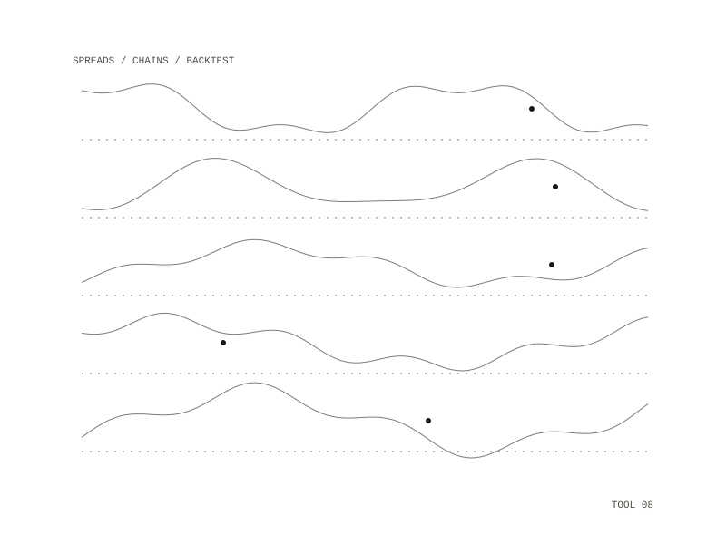

Spica
Spica scans index stocks and custom sectors for 2:1 ratio calendar spreads: buy two near-dated out-of-the-money options and sell one far-dated option at the same strike to fund them, with calls for a bullish view and puts for a bearish one. Results go into a SQLite database, then into a terminal grid and an HTML report.

Scoring
The chance that the near leg finishes in the money is a weighted blend of three models: Black-Scholes on realized volatility, a Monte Carlo of simulated paths from a year of daily returns, and a Monte Carlo with a jump on earnings dates. Liquidity gates filter on open interest, daily volume and bid/ask spread for both legs. The market-data source sits behind one interface, so the math does not depend on where prices come from.
Paper book and learning loop
Each morning the scans run, every candidate is logged as a paper trade, the open book is marked to market, and expired trades are closed. A weekly review writes findings by sector, distance from the money and score, a table of which model best separates winners from losers, and a plain-language plan of improvements that changes nothing by itself. The journal snapshots the model's prediction at entry, so each trade can be scored against its outcome, and a learning step reports calibration per sub-model and proposes new weights only after 30 closed trades.
Backtest
There was no record of past option prices, so the backtest reconstructs chains: price paths are real and option prices come from a volatility surface fitted to the scanner's own stored quotes. The real scanner runs unmodified on each past date, and each candidate is settled under three exit rules. Replaying real scan days, the replay orders candidates the way the live scanner did, with a median rank correlation of 0.92 on score.
Profile mining slices the settled trades many ways, and a slice counts as confirmed only if it beats the baseline in both chronological halves and its bootstrap interval, resampled by symbol and date, clears the baseline. Only confirmed slices reach the live scan. The notes name the known biases (survivorship, no historical liquidity, lagging modeled volatility, model circularity, an in-sample surface) and say they belong in every reading of the output.
large-cap and technology indices plus custom sectors
Python and SQLite, on a daily and weekly schedule